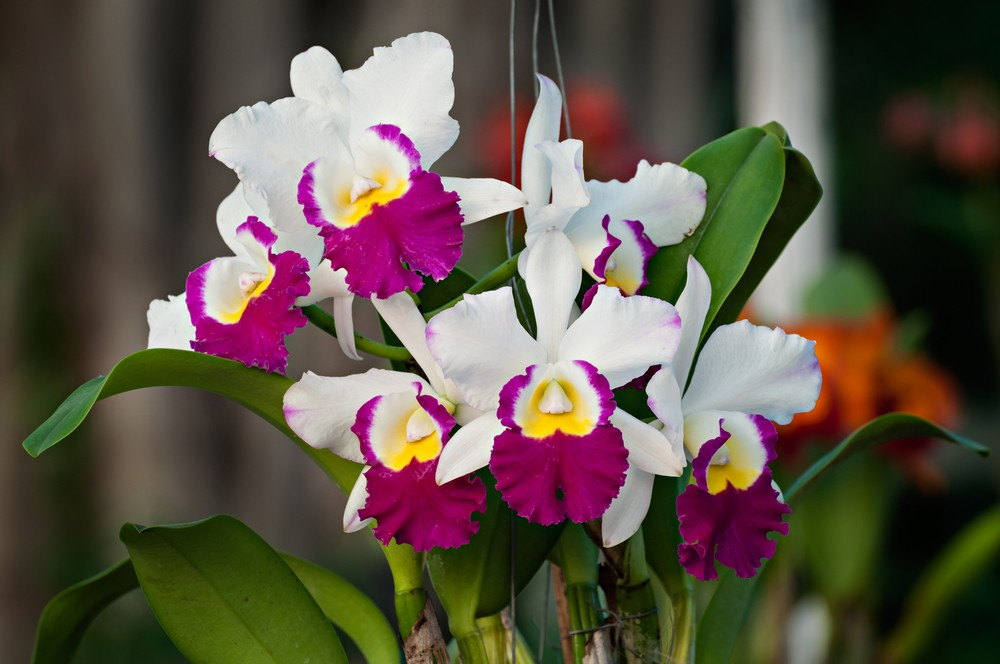

Cattleya
La Cattleya es uno de los tipos de orquídeas más conocidos por sus flores grandes, coloridas y fragantes. Es originaria principalmente de América Central y del Sur y es muy apreciada por su belleza. En Colombia es especialmente reconocida como un símbolo nacional, ya que la Cattleya trianae es la flor nacional del país.
Características:
- Flores grandes y llamativas.
- Colores variados como blanco, rosa, morado y amarillo.
- Hojas verdes, gruesas y alargadas.
- Algunas especies tienen flores muy perfumadas.
- Prefiere lugares con buena iluminación, pero sin sol directo.
- Necesita riego moderado y buena ventilación.
